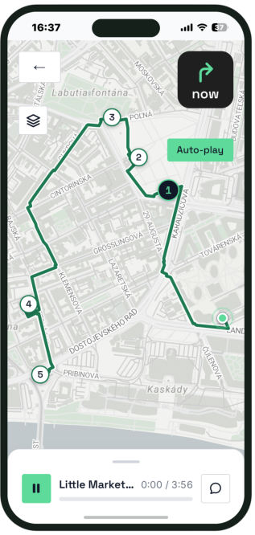

Real places, real coordinates
Every stop is somewhere you can stand: found around you, with the opening lines of its own story read out when you get there.
Pick any city, then say what you actually want to see — in a sentence, or by moving a few sliders. The guide is written for you and read aloud as you walk, in any of 17 languages.

Choose one from the catalogue or type anywhere on Earth. There is no fixed list of tours waiting — the guide is built once you have said where you are.
Describe the guide you want in your own words — or skip the writing and set how long it runs, how much detail you want, the pace, and what actually interests you.
It reads the city to you as you go, turn by turn down real streets, and each stop starts itself the moment you arrive. Not there yet? Simulate the walk.
No pre-recorded tours, no fixed route, no group of forty
Every stop is somewhere you can stand: found around you, with the opening lines of its own story read out when you get there.
The route follows pavements and crossings rather than a straight line, and the next instruction counts down the metres as you walk it.
Tell it what you are into — Baroque facades, where the locals eat, the darker history — and the tour is written around that, not padded with the usual sights.
Not in the mood to write anything? Set how long it runs, how much detail you want, the pace, and what interests you — and let it build from that.
Pick the one you want to listen in and the whole tour is narrated in it — not a translated caption over an English recording.
Not in the city yet? Simulate the walk and it plays out on the map, or click where you are standing. Nothing is hidden behind being there.
Feedback from the first tours
I asked it why the street was named that. It answered, then tied it back to the church we'd passed ten minutes earlier.
I stopped to buy coffee and the narration just waited for me. First audio guide that didn't leave me behind.
Asked for the darker history in my own words and got exactly that — none of the postcard sights.
Name a city, say what you want to see, and start walking. In 17 languages.